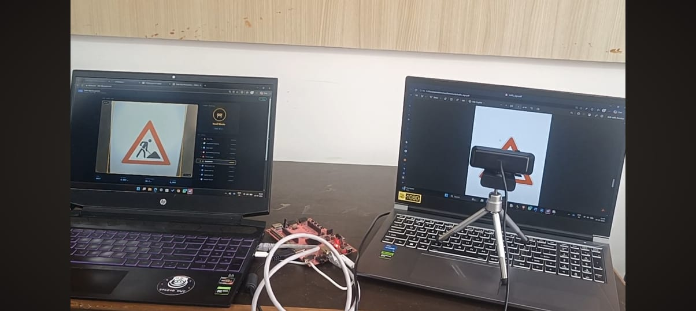
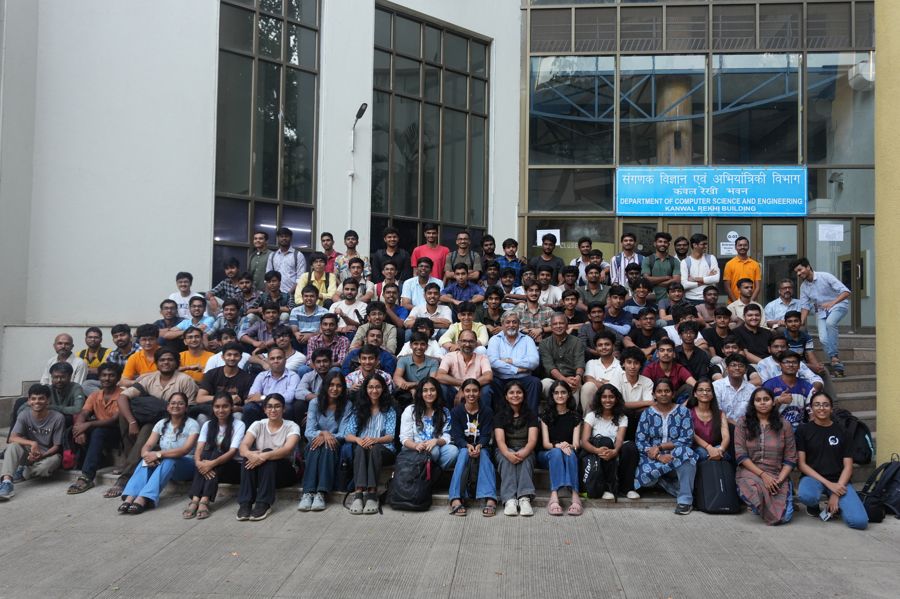
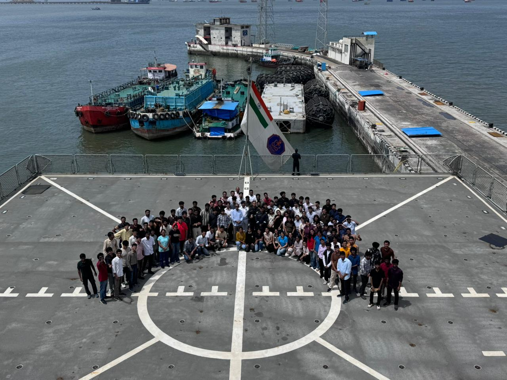
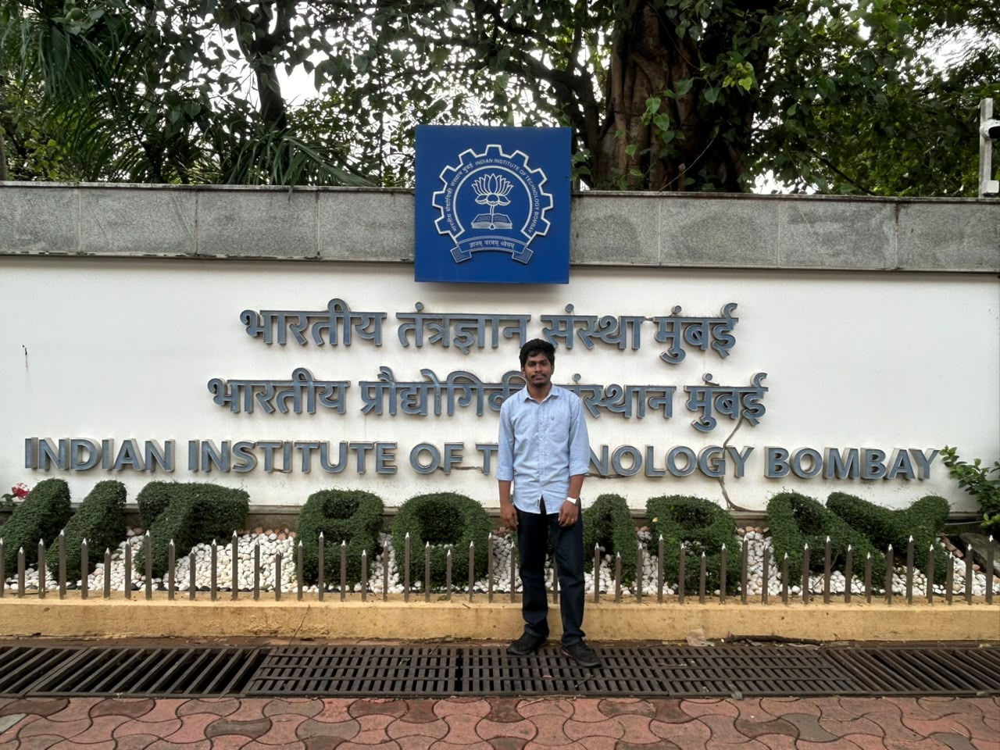
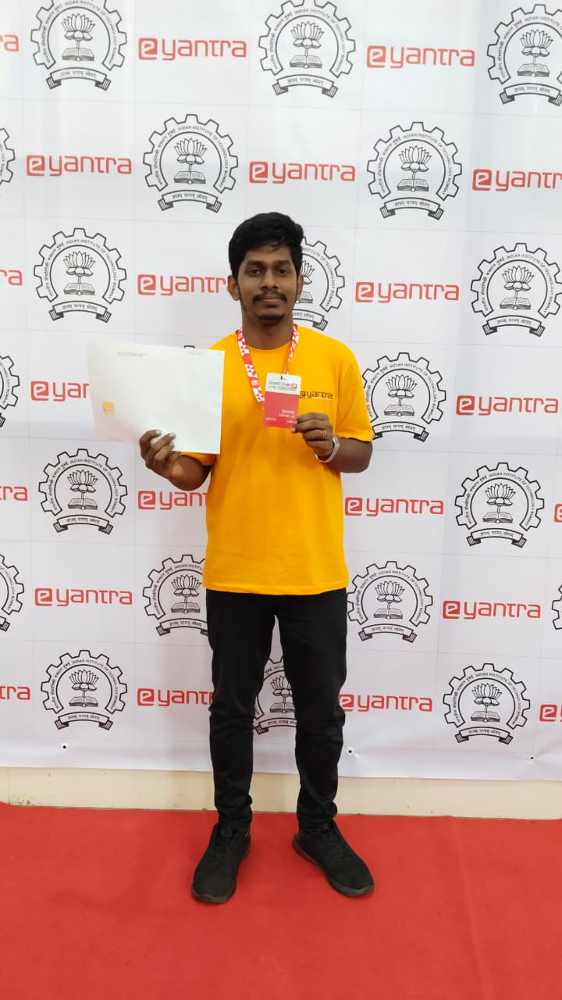
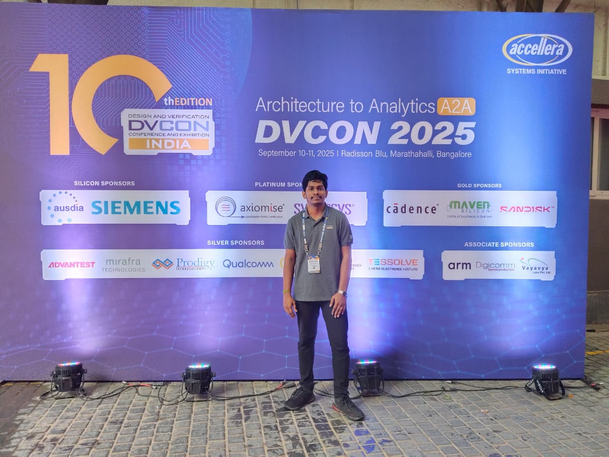
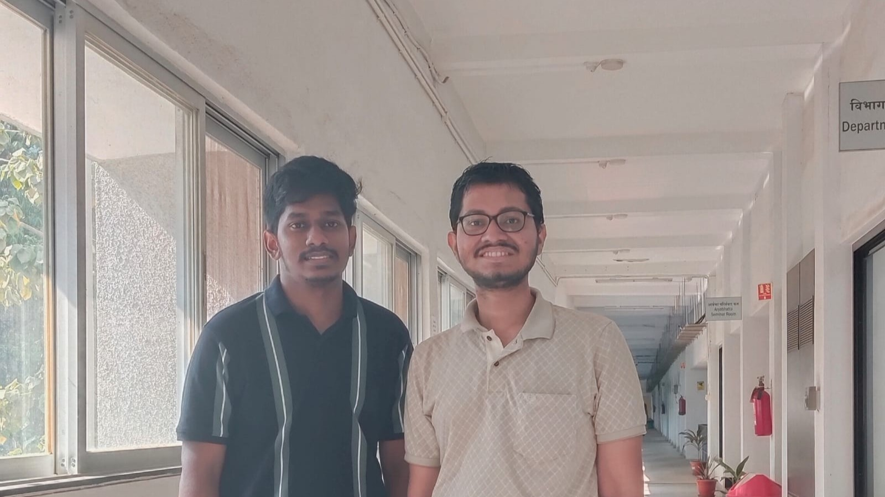

Two months, one FPGA, and a project title long enough to need its own line: "Efficient Inference Architectures on FPGA." Selected for the e-Yantra Summer Internship Program (eYSIP) 2026 at IIT Bombay, working alongside Naveen Kumar B, Sarthak Jain, and Joel Siby on a deceptively simple brief: make CNN inference on an FPGA faster, lighter, and leaner — all at once, please.
The goal on paper was straightforward and stubborn in practice: push performance up, pull latency down, and keep resource utilization honest. We built a fully streaming CNN inference accelerator on the PYNQ-Z2 (Zynq XC7Z020) for real-time traffic sign recognition (GTSRB, 10 classes) — trading a full-frame image buffer for a line-buffer-based design that starts computing on pixels the moment they arrive over AXI-Stream, entirely in hardware: Conv1 → MaxPool1 → Conv2 → MaxPool2 → Dense → ArgMax.
The software model landed at ~96% test accuracy; the hardware pipeline replied with a CNN compute latency of just 66 µs. The real fight was getting pixels into the accelerator — swapping a GPIO-based transfer (~80 ms) for an AXI DMA streaming path (~1.96 ms) bought a 40× speedup, and turned data movement into the bottleneck actually worth chasing next.


Beyond the register maps and the AXI handshakes, the eYantra team packed the internship with sessions that had nothing to do with our own project and everything to do with becoming a slightly more well-rounded engineer — talks that pulled us into robotics, AI, hardware, and a few things none of us saw coming.
Prof. Shivaram Kalyanakrishnan's session on "On Learning" is the one that's stuck the longest — it nudged the whole room to actually sit with the question of what algorithm is quietly running behind every single tap on your smartphone, and how it eventually turns into the ad you see two scrolls later.
Somewhere in the first half of the internship came a session with nothing to do with FPGAs at all — a geopolitics discussion and debate, exactly the kind I enjoy, since I try to keep up with what's happening around the world anyway. The motion on the table: "AI systems should never be allowed to make life-and-death decisions." I objected — not to the caution behind it, but to the word "never."
"Both AI and human judgment deserve a seat at that table — but the final call has to stay with a human being. Ruling the machine out entirely felt like the wrong kind of certainty."

Then came the once-in-a-lifetime part. A visit to the Naval Dockyard, Mumbai, and the chance to actually step inside INS Vagsheer — a real, active-service submarine of the Indian Navy. Walking through it and seeing how tightly everything is packed and engineered was the kind of stunned-silence moment no lecture could replicate. On INS Trishul, a naval officer patiently walked us through how the turbines fire up and how the radar systems track — generous with time and detail for a bunch of interns clearly out of their depth.

And then there was just IIT Bombay itself — the whole environment of it. Long conversations with fellow interns about their wildly different projects, a walk through Sameer Hills, the quiet climb up to the Elephanta Caves, a night cycling ride along Marine Drive, and getting properly soaked in a real Mumbai monsoon at least once. None of it was on the internship syllabus. All of it is the part I'll remember longest.

If two months at IIT Bombay left me with one sentence to carry forward, it's something Prof. Shivaram Kalyanakrishnan said almost in passing, like an aside that turned out to matter more than the main point.
"You are in charge. No matter how it goes — up or down — you take responsibility for your own."
Eight months of eYantra. AIR 5 at the nationals.
It started with simulation tasks — writing Verilog code for interfacing the ultrasonic sensor and DHT11 sensor, designing a custom CPU architecture from scratch, and implementing a maze exploration algorithm. Just code, and a lot of wondering about LUTs, registers, and how to optimize them.
Hardware kit arrived upon getting selected for Stage 2. Intel De0-Nano FPGA board, sensors, motors — and suddenly everything we had simulated had to actually work in the real world. We started assembling with cardboard to get the weight distribution right, then came the 3D printed arm designed in Fusion 360, and an acrylic sheet base. Together they completely threw off the balance we'd spent days calibrating.
As the tasks levelled up, the simulation-to-real gap hit harder than expected. Ultrasonic sensors giving ghost readings. Interfacing temperature, humidity, and soil moisture sensors on FPGA while simultaneously handling motor control and Bluetooth communication in parallel. There were nights where nothing worked and giving up felt like the logical option.
"And right in the middle of it all, slowly, it all started coming together. The bot ran. Not perfectly at first — then better — then good enough to take to the finals."
Getting selected for the finals meant traveling to Indian Institute of Technology, Bombay. That's where the journey gave something beyond the competition — the chance to meet eSim summer fellowship mentor Sumanto Kar sir in person, alongside Sri. Varad Patil sir. A genuinely humble and warm environment.
What 8 months of eYantra actually built: patience, persistence, problem solving, and the ability to learn from every failure. None of this would have been possible alone — through every failed build, every late night, it was the team of Naveen Kumar B, Hemanth S, and R Kishore that kept things moving.


Sabarish Mohan JS and Hemanth S got selected for the Fellowship Opportunity at DVCon India 2025, held at Radisson Blu, Marathahalli on 10–11 September.
DVCon (Design and Verification Conference) is one of the premier conferences in the semiconductor industry, bringing together professionals, researchers, and students to explore cutting-edge advancements in ASIC/SoC design, verification methodologies, and EDA tool innovations. It provided a unique platform to learn, network, and exchange ideas with leaders shaping the future of chip design.

This summer was more than just learning — it was about contributing.
Selected for the FOSSEE Summer Fellowship 2025 at the Indian Institute of Technology, Bombay, with the opportunity to contribute ICs to the main library of eSim, an open-source EDA tool.
Worked on implementing more than 10 digital ICs based on their datasheets. The subcircuits of the IC schematics were created to be simple yet reusable for many future designs. Finally, the validation of these circuits was carried out through custom test circuits that verified their actual functionality — adding meaningfulness to the contribution.
"It has always been a privilege to contribute to open source. Though it was a small technical contribution, it brings immense satisfaction."
Grateful to the entire FOSSEE team and Prof. Kannan Moudgalya for creating such a significant initiative, and to mentor Sumanto Kar sir for his continuous support and for shaping this journey into a valuable experience.
